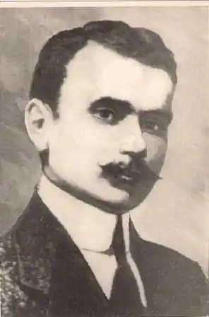
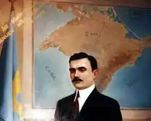

Номан Челебіджіхан (Номан Ибраим огълу Челебиджихан) народився 1885 року, село Біюк-Сонак, Перекопський повіт, Таврійська губернія, Російська імперія — кримськотатарський політичний і державний діяч. Один з організаторів першого Курултаю, перший голова уряду проголошеної в 1917 році Кримської Демократичної Республіки, перший муфтій мусульман Криму, Литви, Польщі і Білорусі.
Відомий також як Челебі Челебієв, саме так його ім'я було записано в офіційних російських документах. Слова його вірша крим. "Ant etkenmen!" ("Я присягнувся!") стали національним гімном кримських татар.
Отримав початкову освіту в сільській школі, продовжив її в медресе Акчора, а потім у Зинджирли медресе. Спільно з Джафером Сейдаметовим і Абібуллою Одабаш заснував патріотичну спільноту "Батьківщина" (крим. "Vatan") (1909 року) — підпільну політичну організацію, членами якої були кримськотатарські студенти в Османській імперії. За пропаганду соціалістичних ідей був заарештований. Після Лютневої революції Челебіджіхан повернувся до Криму, очолив національний рух кримських татар. На їх першому з'їзді в Сімферополі 25 березня 1917 обраний головою Всекримського Мусульманського виконкому і муфтієм-головою Таврійського мусульманського духовного управління. Челебіджіхан організував маніфестації кримських татар, збір пожертвувань у "фонд перемоги" над Німецькою імперією, Османською імперією та її монархічними союзниками. Очолюваний ним Мусульманський виконком було визнано органом Тимчасового уряду в управлінні кримськими татарами з підпорядкуванням його міністерству внутрішніх справ Росії. Тоді ж побачили світ такі видання, як "Millet" ("Нація") кримськотатарською мовою та "Голос татар" — російською. З 5 квітня 1917 фактично всі справи кримських татар у компетенції Мусвиконкому. Його центральні органи: газети "Millet" ("Нація", редактор Асан Сабрі Айвазов, з 27 червня 1917), тижневик "Голос татар" (Алі Боданінський та Х. Чапчакчі, з 22 липня). Керівництво Мусвиконкому сприяло офіційному оформленню Національної партії — Milliy Fırqa, основною метою якої є національне самовизначення кримських татар. Перший склад ЦК: Челебі Челебієв, Джафер Сейдамет, Асан Сабрі Айвазов, Сеїтджеліль Хаттат, Амет Озенбашли, Дж. Аблаєв, А. Хільмі (Ільмі). Своїм завданням партія вважала створення автономної Кримської держави зі збереженням ладу між етнічними групами. Влітку 1917, з дозволу Александра Керенського, почалися формуватися власні татарські національні військові формування, так звані ескадрони. Челебіджіхан закликає до формування мусульманських збройних сил, у липні він виступає проти відряджання на фронт трьох запасних мусульманських полків. Ця активність у Криму не подобається Тимчасовому уряду Росії, який готується до її пригнічення. 23 червня 1917 року, Номан Челебіджіхан був заарештований севастопольською контррозвідкою, але незабаром його були змушені звільнити, оскільки кримські татари висловили протест на захист свого лідера, закріпивши його п'ятьма тисячами підписів. На Всекримському з'їзді кримських татар у Сімферополі 2 жовтня 1917 Челебіджіхан виклав програму реорганізації Мусульманського виконкому в Курултай — парламент кримськотатарського народу. Перед ним ставилось завдання взяти участь у здійсненні територіальної автономії півострова під гаслом: "Крим для кримчан". Челебіджіхан засудив жовтневий переворот у Петрограді 25 жовтня 1917, виступав за утворення революційної влади з участю всіх соціалістичних партій (без кадетів). У листопаді 1917 року (за старим стилем) у Криму проходить I Курултай кримськотатарського народу, підготовлений Номаном Челебіджіханом із соратниками. Челебіджіхан входить до комісії з розробки проєкту Конституції Кримської Демократичної Республіки. Номан Челебіджіхан виступав за рівноправ'я всіх народів, що живуть у Криму: "Наше завдання, створення такої держави, як Швейцарія. Народи Криму є прекрасним букетом, і для кожного народу потрібні рівні права й умови, бо нам іти пліч-о-пліч". Проте прихід до влади більшовиків, які не визнавали кримськотатарський уряд, поставив під загрозу існування молодої Кримської Демократичної Республіки. Виявив нерішучість у збройній боротьбі з більшовиками і 4 січня 1918 з власної ініціативи подав у відставку з керівних посад. На його пропозицію 10 січня 1918 Курултай утворив комісію, яка вела переговори з більшовиками про припинення збройної боротьби в Криму. Скориставшись цим, більшовики 14 січня 1918 безперешкодно захопили владу в Сімферополі, заарештували Челебіджіхана і літаком перевезли в Севастополь. 23 лютого 1918 був розстріляний у міській в'язниці матросами-більшовиками, а його тіло викинуте в Чорне море.